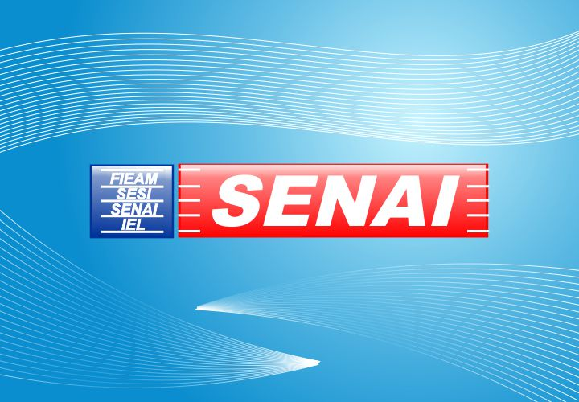

Descubra um pouco sobre nós...
Saiba o que somos, o que fazemos e o que queremos!
O que é Senai?
Você pode usar a barra de tarefas na parte inferior da tela para alternar entre programas abertos. No Windows 7 você pode definir a ordem dos ícones da barra de tarefas e eles permanecerão na ordem escolhida. Além disso, os ícones são maiores. Ao apontar para um ícone, você verá uma pequena versão de visualização da página ou do programa. Se apontar para essa visualização, você verá uma visualização de tela inteira. Para abrir um programa ou arquivo, clique no ícone ou em uma das visualizações.
Quais os cursos oferecidos?
Graças a um aprimoramento na pesquisa, você pode encontrar mais coisas, em mais lugares e com mais rapidez do que em versões anteriores do Windows. Basta digitar algumas letras na caixa de pesquisa para ver uma lista de itens relevantes, como documentos, imagens, música e email. Os resultados de pesquisa são agrupados por categoria e contêm palavras-chave realçadas para facilitar sua localização. Hoje em dia, pouca gente armazena todos os seus dados em um só lugar. O Windows 7 foi projetado para pesquisar em discos rígidos externos, PCs em rede e outros locais. Ele também acelera sua pesquisa exibindo recomendações com base em consultas anteriores. Os resultados são esmagadores? Novos filtros dinâmicos podem reduzir os resultados instantaneamente classificando-os em categorias como tipo de dado ou de arquivo.


{kind=link}